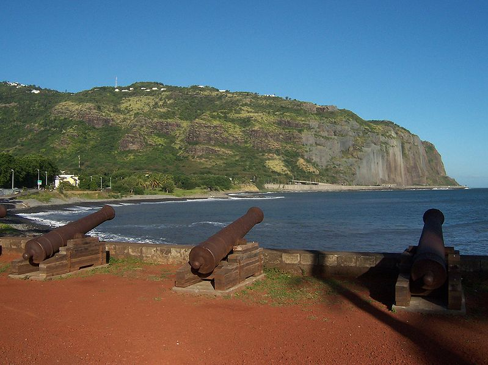
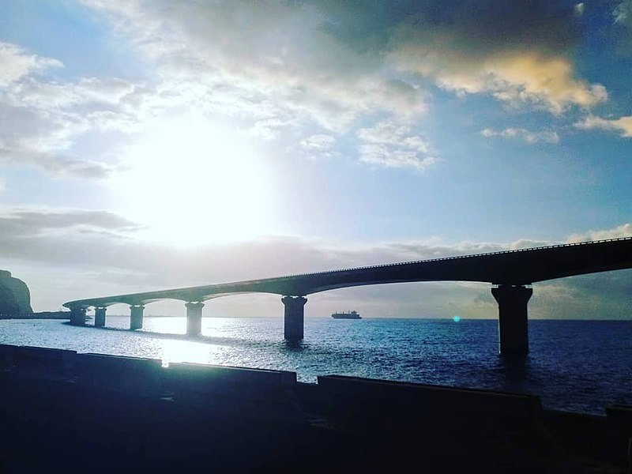

La route du litoral, plus communément appelée route en
Corniche est un tronçon de la route nationale 1 à quatre voies qui relie les deux grands pôles économiques
de la Réunion que sont Saint-Denis-de-la-Réunion et La Possession (voir la carte routière).
Le chantier de cette route a commencé en février 1959 pour prendre fin le 1er juin 1963, jour de son inauguration.
Les travaux ont largement été retardés par les difficultés de percement de la montagne, trop friable pour assurer la solidité des tunnels.
Il aura fallu apporter 1 500 000 m3 de roches pour réaliser la plate-forme
de la route, percer 1.518 mètres de tunnel (dont seuls 320m seront mis en service) et une note de 3 milliards cent millions de francs CFA pour réaliser ces 13 km de voie rapide. Depuis les années 60, le trafic ne cesse d'augmenter
entre les deux villes et en 1973 de nouveaux travaux commencent pour livrer une 2×2 voies trois ans plus tard dès 1976. La voie de chemin de fer qui assurait la même liaison a été fermée cette même année.

Route de la corniche vue depuis le Barachois à Saint-Denis. Photo : B.navez
Aujourd'hui c'est la route la plus utilisée de la Réunion et les embouteillages sont nombreux d'autant que les
conditions de circulation ne sont pas des meilleures. La falaise qui surplombe la route est très friable et d'énormes blocs s'en détachent lors de fortes pluies. Aussi, la platte-forme qui soutien la route est sujette aux attaques de la houle océanique malgré la pose d'énormes tétrapodes de béton pour l'en protéger.
Dès la première année de mise en service, les fortes pluies sont la cause d'éboulements de la
falaise. D'énormes filets métalliques, ainsi que des barrières de
protection ont été posées au cours des années. Les derniers travaux
furent ceux de la pose, par des alpinistes, de filets anti-sous-marin
datant de la seconde guerre mondiale sencés retenir les roches. Encore aujourd'hui, des
voitures se retrouvent coincées sous les éboulis. C'est pourquoi les jours de mauvais temps la route est basculée, c'est-à-dire que voie intérieure est fermée et la circulation est reportée sur 2×1 voie provoquant d'énormes embouteillages. La DDE
doit assurer une suveillence de tous les instants comme le prouvent webcams
placées stratégiquement.
De son coté, l'océan ne manque pas d'envoyer ses embruns sur la route,
randant la chaussée glissante et la conduite difficile voir impossible malgré la présence des tétrapodes de béton. Cette protection a ses limites et lorsqu'un cyclone ou une tempête passe à au large de Madagascar, le temps est si mauvais à la Réunion que certains véhicules de retrouvent à l'eau.
Pour mettre fin à ces basculements par mauvais temps et faire face à la croissance du trafic, il a été prévu un nouvelle route du littoral donc plusieurs tracés ont été étudiés. Mèlant viaducs en mer et tunnels, cette nouvelle route devrait s'appuyer sur des digues suffisement hautes et solides pour tenir face la houle. Cette nouvelle quatre voies serait doublée d'un train-tram nouveau transport collectif qui devrait soulager les réunionnais qui en ont assez des embouteillages (projet qui a hélas été abandonné depuis).
Les travaux de la nouvelle route du littoral ont commencé en 2014 pour une livraison prévue en 2018 mais de multiples falfaçons et autres problèmes ont repoussé l'échéance à 2023 au minimum. De plus, le développement d'infrastructures visant rejeter plus de CO2 dans l'atmosphère ne sont plus très à la mode et l'étendue des travaux a été réduite par rapport au projet initial.

Viaduc de Grande Chaloupe, Nouvelle route du Litoral. Photo : Titiréunion
Cet ouvrage gigantesque et meurtrier est en tout cas une sujet de fierté
et de discussion chez les réunionnais. Plutôt que de vous citer un
ladilafé si la rout en corniss, je rappellerais une chanson de Michel
Admette qui disait « Moin la peur mi di à ou, Pass' la route en
corniss' ». Vous pouvez retrouver son sega dans son album BEST et les
paroles sur le site de Daniel Lacouture.
Puisqu'en France, tout se termine en chanson, cet article est terminé.
{kind=link}
{kind=link}